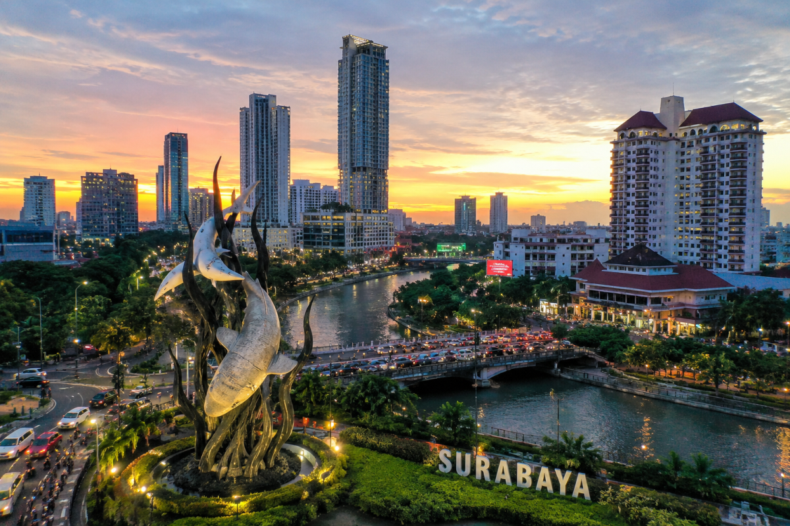

Historical City
Surabaya has an important place in Indonesia's history and identity.
A vibrant city in East Java, known for its rich history, diverse culture, and dynamic urban life.

Surabaya is a major city in East Java, known for its important role in Indonesia, lively urban character, and strong historical identity. As one of the country's largest cities, it serves as an important center for business, education, government, and trade. The city is also known as the City of Heroes, reflecting its significant role in Indonesia's struggle for independence. Today, Surabaya continues to develop as a modern city while preserving its local culture, heritage, and distinctive character.
Surabaya has an important place in Indonesia's history and identity.
Its diverse communities create a lively and distinctive urban culture.
Surabaya continues to grow as a dynamic and well-connected city.